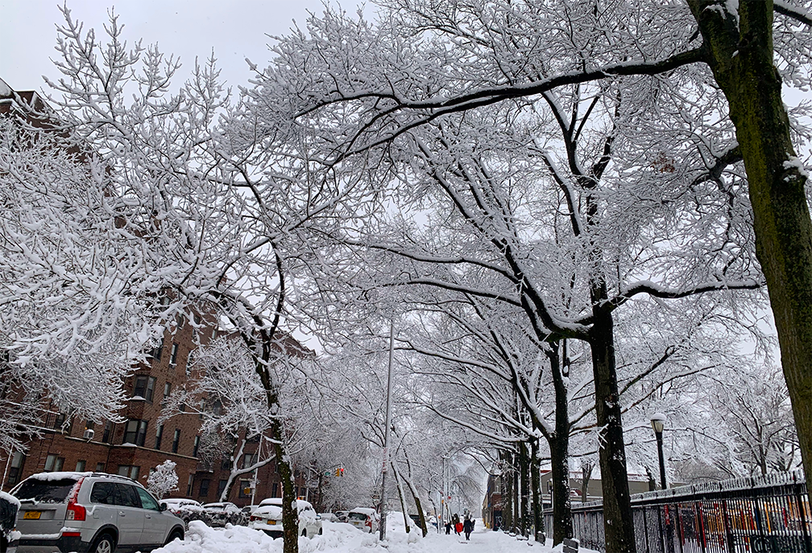
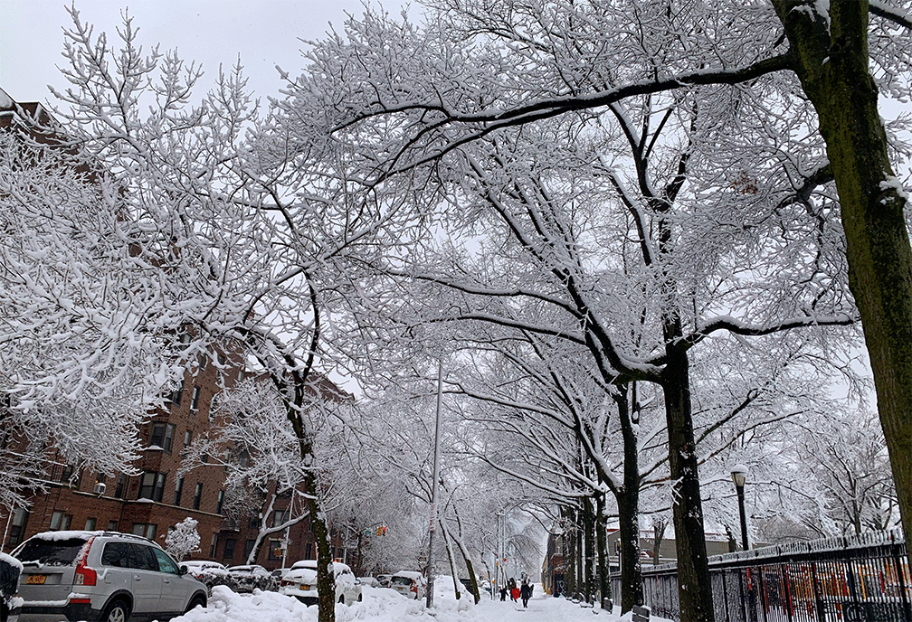
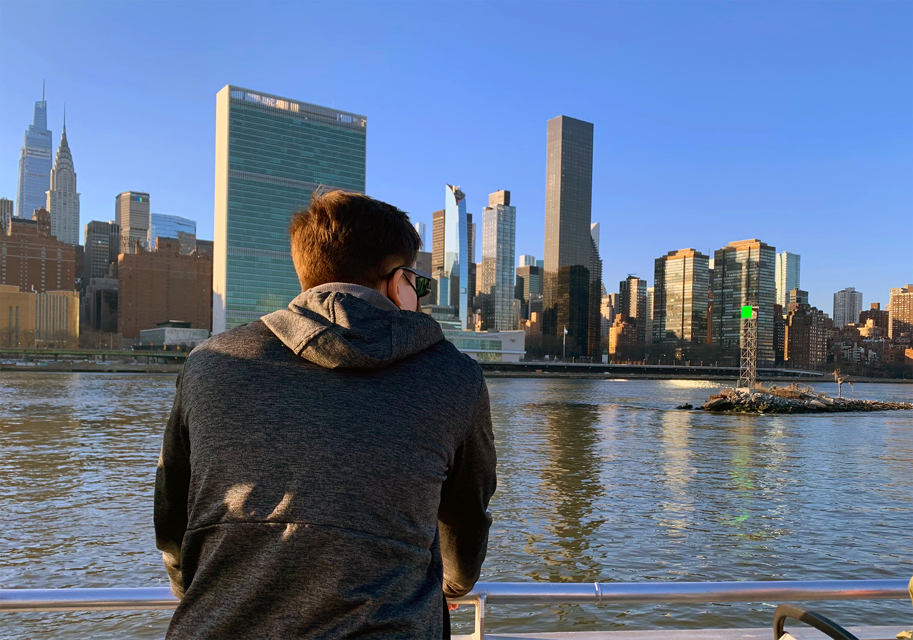

Week 2 In Class Assignment
For this assignment, we were told to optimize and export an image into three formats:
.jpg, .png, and .gif. I've uploaded them here in that order. The first part of the assignment
is only exporting them into different file types. The second part includes making the photos
become a clickable link, leading to three different websites. For this part, I used photos taken
off of the ferry from Astoria to Wall Street, so each link leads to a different site related to
taking a trip on the ferry.




Go Back to Main Page